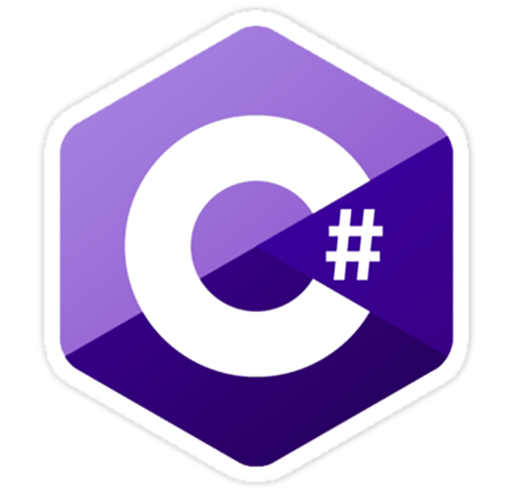
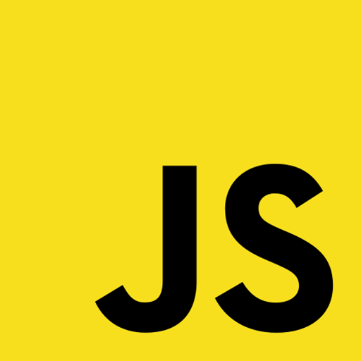
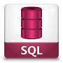

Angular
I used Angular in my Front-end Capstone Project (Gift Card X-change). Can't wait to learn Angular 2.
Bootstrap
I use Bootstrap regularly. I used it most recently in my Back-end Capstone (Wordris).
C#
 The programming language I have used the most. I taught myself C# when I was working at NAPCO (see my LinkedIn page) for creating many Apps that helped me in my testing. It was nice when I could come back to it in the NSS Back-end course.
CSS3
Along with HTML, CSS3 was the main focus of the first 6 months (front-end development) of NSS.
Git/GitHub
Git and GitHub was the backbone of our training. We used this constantly throughout the year.
HTML5
 Along with CSS3, HTML was the main focus of the first 6 months (front-end development) of NSS.
Along with CSS3, HTML was the main focus of the first 6 months (front-end development) of NSS.
Java
Before NSS, I enrolled in the University of Illinois/O'Reilly School of Technology and obtained a Certificate of Professional Development in Java Programming.
JavaScript
 Javascript was taught to us in the first 6 months (front-end development) of NSS. My Back-end Capstone Project, Wordris, is written mostly in this language.
JQuery
JQuery is a JavaScript library that I use occasionally. For example, I used JQuery in Wordris for its AJAX calls.
Python
I had to teach myself Python when I was working at Quanta. I was responsible for maintaining the test environments that our customers had set up, and their test scripts were written in Python 2.7 (not 3.0, unfortunately). I would have to make alterations in the scripts depending on changes in the hardware being repaired at the time.
SQL
 I've used SQL quite a bit over the years. At NAPCO, our software product used a SQL Server DB, so when testing, I would have to create SQL Queries in SQL Server Management Studio to validate data. While at Quanta, I wrote code in Visual Basic that would collect test results and upload them to a central DB, for future reference. At the Tennessee Dept. of Education, I have had to write many SQL Queries (Selects with Joins) for data validation.
Visual Basic
I used Visual Basic while at Quanta to collect diagnostic test logs from the tablet computers and upload them to the central DB. Quanta used the test data to keep track every tablet sent in for repair.